전자계산기기능사 (2011-02-13 기출문제)
1과목: 전기전자공학
1. 수정진동자의 직렬공진주파수를 fo, 병렬공진주파수를 fs라 할때 수정진동자가 안정된 발진을 하기 위한 리맥턴스 성분의 주파수 f의 범위는?
- fo < f < fs
- fo < fs < f
- fs < f < fo
- f = fs = fo
(정답률: 57%)

2. 10Ω 저항 10개를 사용하여 얻을수 있는 가장 큰 합성저항값은?
- 1Ω
- 10Ω
- 50Ω
- 100Ω
(정답률: 86%)
3. 다음중 디지털 변조에 속하지 않는것은?
- PM
- ASK
- QAM
- QPSK
(정답률: 70%)
4. 펄스 변조중 정보 신호에 따라 펄스의 유무를 변화시키는 방식은?
- PCM
- PWM
- PAM
- PNM
(정답률: 61%)
5. 다음 회로에서 베이스전류 IB는?(단 VCC=6V, VBE=0.6V, RC=2KΩ, RB=100KΩ 이다. )
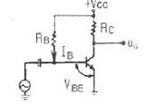
- 27 μA
- 36 μA
- 54 μA
- 60 μA
(정답률: 50%)
6. Y 결선의 전원에서 각 상의 전압이 100V 일때 선간전압은?
- 약 100V
- 약 141V
- 약 173V
- 약 200V
(정답률: 43%)
7. 다음중 맥동률이 가장 작은 정류방식은?
- 단상 전파정류
- 3상 전파정류
- 단상 반파정류
- 3상 반파정류
(정답률: 41%)
8. 다음 그림은 어떤 종류의 바이어스 회로인가?
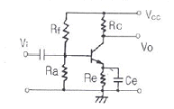
- 전류궤환 바이어스
- 전압궤환 바이어스
- 고정 바이어스
- 전압. 전류궤환 바이어스
(정답률: 44%)
9. 비오-사바르의 법칙은 어떤 관계를 나타내는 법칙인가?
- 전류와 자장
- 기자력과 자속밀도
- 전위와 자장
- 기자력과 자장
(정답률: 56%)
10. 10V의 전압이 100V로 증폭되었다면 증폭도는?
- 20dB
- 30dB
- 40dB
- 50dB
(정답률: 46%)
2과목: 전자계산기구조
11. 제한된 영역내에 데이터를 어느 한쪽에서는 입력만 시키고, 그 반대쪽에서는 출력만 수행함으로써 가장 먼저 입력된 데이터가 가장먼저 출력되는 선입선출형식의 구조는?
- 스택(stack)
- 큐(Queue)
- 버스(bus)
- 캐시(cache)
(정답률: 60%)
12. 다음과 같은 회로도는?
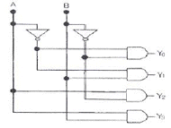
- 인코더
- 카운터
- 가산기
- 디코더
(정답률: 64%)
13. 컴퓨터에서 연산을 수행하기 위한 수치를 표현하는 방법중 부호,지수 및 가수로 구성되는것은?
- 부동 소수점 표현 방식
- 고정 소수점 표현 방식
- 언팩 표현 방식
- 팩 표현 방식
(정답률: 74%)
14. 정보의 송수신이 동시에 가능한 방식은?
- Simplex 방식
- Complex 방식
- Half Duplex 방식
- Full Duplex 방식
(정답률: 69%)
15. 3초과 코드는 신호가 없을때 구별하기 쉽게 하기 위해 사용하는데 3초과 코드에서 존재하지 않는 값은?
- 1010
- 0011
- 100
- 0001
(정답률: 60%)
16. CPU가 어떤 작업을 수행하고 있는 중에 외부로 부터의 긴급 서비스 요청이 있으면 그 작업을 잠시 중단하고 요구된 일을 먼저 처리한 후에 다시 원래의 작업을 수행하는 것은?
- 시분할
- 인터럽트
- 분산처리
- 채널
(정답률: 78%)
17. 레지스터의 일종으로 산술연산이나 논리연산의 결과를 일시적으로 기억시키는 장치는?
- 오퍼레이터
- 시프트
- 메모리
- 누산기
(정답률: 79%)
18. 다음 설명에 해당하는 것은?
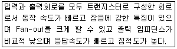
- TTL
- CMOS
- RTL
- ECL
(정답률: 61%)
19. 문자 자료의 표현방법에 해당하지 않는것은?
- BCD 코드
- ASCII 코드
- EBCDIC 코드
- EX-OR 코드
(정답률: 77%)
20. 입출력 장치의 역할로 가장 적합한 것은?
- 정보를 기억한다.
- 명령의 순서를 제어한다
- 기억용량을 확대시킨다.
- 컴퓨터의 내. 외부 사이에서 정보를 주고 받는다.
(정답률: 83%)
21. 다음중 출력 장치로만 묶어 놓은 것은?
- 키보드,디지타이저
- 스캐너,트랙볼
- 바코드,라이트 펜
- 플로터,프린터
(정답률: 87%)
22. 위성통신의 장점에 속하지 않는것은?
- 기후의 영향을 받지 않는다.
- 광대역 통신이 가능하다.
- 통신망 구축이 용이하다.
- 수명이 영구적이다.
(정답률: 77%)
23. 프로그램 카운터의 명령어가 지시한 명령의 오퍼랜드가 기억된 주소를 표시하는 주소지정 방식은?
- 직접 번지 지정 방식
- 간접 번지 지정 방식
- 즉시 번지 지정 방식
- 레지스터 번지 지정 방식
(정답률: 53%)
24. 2진수 1001과 0011을 더하면 그 결과는 2진수로 얼마인가?
- 1110
- 1101
- 1100
- 1001
(정답률: 74%)
25. 명령어를 해독하기 위해서 주기억장치로부터 제어장치로 해독할 명령을 꺼내오는 것은?
- 실행(execution)
- 단항연산(unary operation)
- 직접 번지(direct address)
- 명령어 인출(instruction fetch)
(정답률: 84%)
26. 중앙처리장치의 간섭을 받지 않고 기억장치에 접근하여 입출력 동작을 제어하는 방식은?
- DMA 방식
- 스트로브 제어 방식
- 핸드쉐이킹 제어 방식
- 인터럽트에의한 제어방식
(정답률: 71%)
27. 주소 부분이 없기 때문에 스택을 이용하여 연산을 수행하는 명령어는?
- 0-주소 명령어
- 1-주소 명령어
- 2-주소 명령어
- 3-주소 명령어
(정답률: 76%)
28. 10진수 (682)10을 8진수로 변환하면?
- (1152)8
- (1251)8
- (1252)8
- (1250)8
(정답률: 67%)
29. 다음중 게이트당 소모전력(mW)이 가장 적은 IC는?
- TTL
- RTL
- DTL
- CMOS
(정답률: 80%)
30. 다음 코드중 데이터 통신용으로 널리 사용되며 소형 컴퓨터에서 채택하고 있는것은?
- ASCII
- BCD
- EBCDIC
- Hamming
(정답률: 72%)
3과목: 프로그래밍일반
31. 운영체제의 페이지 교체 알고리즘 중 최근에 사용하지 않은 페이지를 교체하는 기법으로서 최근의 사용여부를 확인하기 위해서 각 페이지마다 2개의 비트가 사용되는것은?
- NUR
- LFU
- LRU
- FIFO
(정답률: 51%)
32. 명령 단위로 차례로 번역하여 즉시 실행하는 방식의 언어번역 프로그램은?
- 컴파일러
- 링커
- 로더
- 인터프리터
(정답률: 47%)
33. 구조적 프로그래밍의 설명으로 틀린것은?
- 프로그램의 수정 및 유지보수가 용이하다.
- 순차,조건,반복구조를 기본 구조로 사용한다.
- GOTO문을 많이 사용하여 기능별로 모듈화 시킨다.
- 프로그램의 구조가 간결하여 흐름의 추적이 가능하다.
(정답률: 79%)
34. 다음의 소프트웨어 개발 과정중 가장 먼저 수행되는 단계는?
- 시스템 디자인
- 코딩 및 구현
- 요구 분석
- 테스팅 및 에러교정
(정답률: 70%)
35. 운영체제의 역할과 거리가 먼것은?
- 사용자와 시스템간의 인터페이스 역할
- 데이터 공유 및 주변장치 관리
- 자원의 효율적 운영 및 자원 스케줄링
- 저급 언어를 고급 언어로 변환
(정답률: 66%)
36. 프로그래밍 언어의 구문 요소중 프로그램의 이해를 돕기 위해 설명을 적어두는 부분으로 프로그램의 실행과는 관계가 없고 프로그램의 판독성을 향상시키는 요소는?
- Reserved Word
- Operator
- Key word
- Comment
(정답률: 67%)
37. 프로그래밍 언어가 갖추어야할 요건과 거리가 먼것은?
- 프로그래밍 언어의 구조가 체계적이어야 한다.
- 언어의 확장이 용이하여야 한다.
- 효율적인 언어이어야 한다.
- 많은 기억장소를 사용하여야 한다.
(정답률: 75%)
38. 고급 언어의 특징 설명으로 틀린것은?
- 기종에 관계없이 사용할 수 있어 호환성이 높다.
- 2진수 형태로 이루어진 언어로 전자계산기가 직접 이해할 수 있는 형태의 언어이다.
- 하드웨어에 관한 전문지식이 없어도 프로그램 작성이 용이하다.
- 프로그래밍 작업이 쉽고 수정이 용이하다.
(정답률: 68%)
39. C언어에서 사용되는 자료형이 아닌것은?
- double
- float
- char
- interger
(정답률: 63%)
40. 프로그래밍 언어의 수행순서는?
- 컴파일러 - 로더 - 링커
- 로더 - 컴파일러 - 링커
- 링커 - 로더 - 컴파일러
- 컴파일러 - 링커 - 로더
(정답률: 68%)
4과목: 디지털공학
41. 다음 그림과 같은 동기적 RS 플립플롭회로에 S=1,R=0,C=1의 입력일때 출력
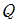
와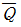
의 값은?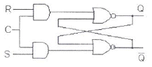
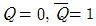
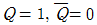
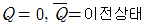
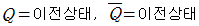
(정답률: 60%)
42. 클록 펄스의 갯수나 시간에 따라 반복적으로 일어나는 행위를 세는 장치로서 여러개의 플립플롭으로 구성되는 것은?
- 계수기
- 누산기
- 가산기
- 감산기
(정답률: 72%)
43. 디지털 신호를 아날로그 신호로 바꾸는 것은?
- 멀티플렉서
- 인코더
- D/A 변환기
- 디코더
(정답률: 85%)
44. 2진수 1111의 2의 보수는?
- 0000
- 0001
- 1000
- 1111
(정답률: 76%)
45. 불대수식 AB+ABC를 간소화 하면?
- AB
- AC
- BC
- ABC
(정답률: 66%)
46. 10진수 3을 Gray Code 4bit로 바르게 변환한것은?
- 0001
- 0010
- 0011
- 0100
(정답률: 55%)
47. 불 대수의 공식으로 옳지 않은것은?
- A+1=1
- A+A=A
- AㆍA=A
- Aㆍ1=1
(정답률: 69%)
48. 하나의 공통된 시간 펄스에 의해 플립플롭들이 트리거 되어 모든 플립플롭 상태가 동시에 변화하는 계수 회로의 명칭은?
- 이동 계수 회로
- 상향 계수기 회로
- 비 동기형 계수 회로
- 동기형 계수 회로
(정답률: 69%)
49. BCD 코드에 의한 수 0100 0101 0010을 10진수로 나타내면?
- 542
- 452
- 442
- 432
(정답률: 84%)
50. 반감산기 회로에서 차를 구하기 위해 사용되는 게이트는?
- AND
- OR
- NAND
- EX-OR
(정답률: 58%)
51. 카운터와 같이 플립플롭을 사용하는 디지털 회로를 무엇이라 하는가?
- 조합논리회로
- 순서논리회로
- 아날로그 논리회로
- 멀티플렉서 논리회로
(정답률: 56%)
52. 다음 진리표에 해당하는 논리회로는?
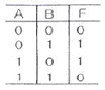
- NOT
- Exclusive-OR
- NAND
- NOR
(정답률: 72%)
53. 플립플롭 회로가 불확정한 상태가 되지 않도록 반전기(NOT gate)를 설치한 회로는?
- JK-FF
- RS-FF
- T-FF
- D-FF
(정답률: 40%)
54. 2진 정보의 저장과 클럭펄스를 가해 좌우로 한 비트씩 이동하여 2진수의 곱셈이나 나눗셈을 연산하는 장치에 이용되는 것은?
- 가산기(adder)
- 카운터(counter)
- 플립플롭(flip flop)
- 시프트 레지스터(shift register)
(정답률: 73%)
55. 일반적 디지털 시스템에서 음수 표현 방식이 아닌것은?
- 부호와 절대값
- “-” 표시
- 1의 보수
- 2의 보수
(정답률: 77%)
56. 가장 간단한 레지스터 회로는 외부 게이트가 전혀 없이 어떤 회로로 구성되어 지는가?
- 플립플롭
- AND 게이트
- X-OR 게이트
- 자기코어
(정답률: 64%)
57. T 플립플롭 회로 두개가 직렬로 연결되어 있을 경우 500Hz의 사각형파를 입력시킬 경우 마지막 출력 되는 주파수는?
- 100Hz
- 125Hz
- 150Hz
- 175Hz
(정답률: 65%)
58. 플립플롭이 n개일때 카운터가 셀 수 있는 최대의 수 N은?
- N = 2n
- N = 2n+1
- N = 2n-1
- N = 2n+1
(정답률: 53%)
59. 디지털 장치에서 데이터 선이 4개라면 최대 몇 가지 상태로 기호화 할 수 있는가?
- 4 가지
- 8 가지
- 16 가지
- 32 가지
(정답률: 80%)
60. 다음 논리회로 기호에서 입력 A=1, B=0 일때 출력 Y의 값은?
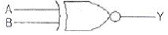
- Y=0
- Y=1
- Y=이전상태
- Y=반대상태
(정답률: 61%)